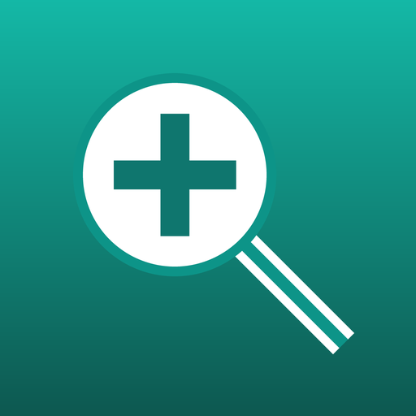
Semana del 4 al 11 de noviembre de 2026
Todo lo de este documento vale en la app de iPhone, en la de Android y en la versión web. Las capturas son de la versión web en tamaño de teléfono, con pacientes de prueba. En rojo, lo nuevo.
Cuando el paciente vuelve a control por el mismo motivo, ya no hace falta abrir otra ficha: se agrega una evolución a la misma. Las evoluciones se leen como una historia clínica, de la más antigua arriba a la más reciente abajo.
Toque una evolución para abrirla y corregir fecha, hallazgos, diagnóstico, tratamiento, observaciones o próximo control. Las observaciones también se editan directamente con el lápiz ✏️.
Dónde: paciente → pestaña Evolución.
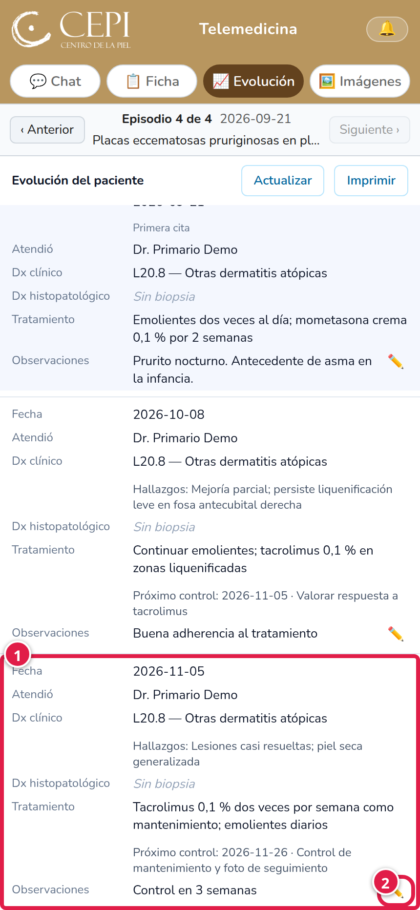
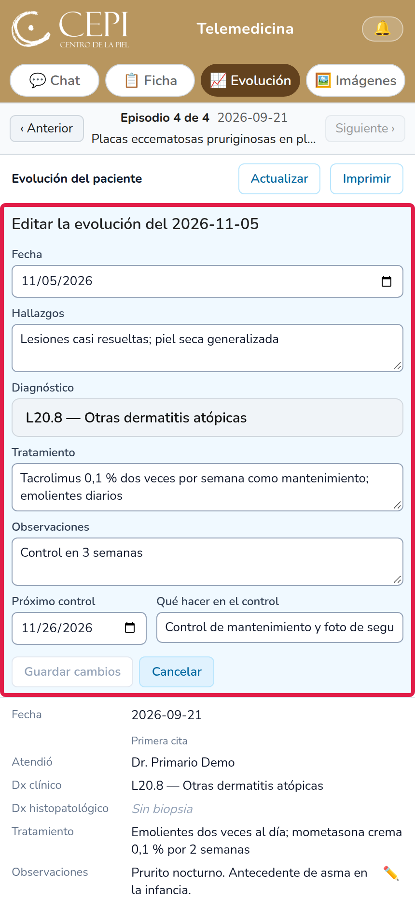
Debajo de la última evolución aparece el próximo control: la fecha, qué hacer y si está atrasado, es hoy o es próximo. Tóquelo para cambiar la fecha o la indicación.
Al final está el botón «＋ Agregar evolución» para registrar la cita de control de hoy.
Dónde: paciente → Evolución, al final de la página.
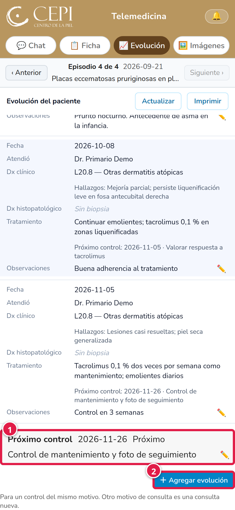
La barra «Episodio N de M», con «Anterior» y «Siguiente», ahora está en Chat, Ficha, Evolución e Imágenes. El episodio que elija vale para las cuatro secciones.
En Imágenes se ven las fotos de ese episodio; con «Ver todas» se ven las de todas las consultas del paciente.
Dónde: debajo de las pestañas del paciente.
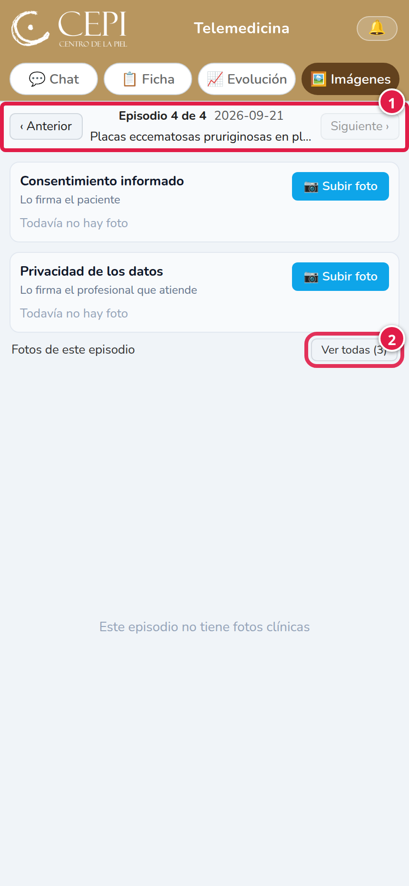
El botón «Imprimir» está ahora arriba en la Ficha, en el mismo lugar que en Evolución. Abre la ficha lista para imprimir o guardar en PDF.
Dónde: paciente → Ficha, esquina superior derecha.
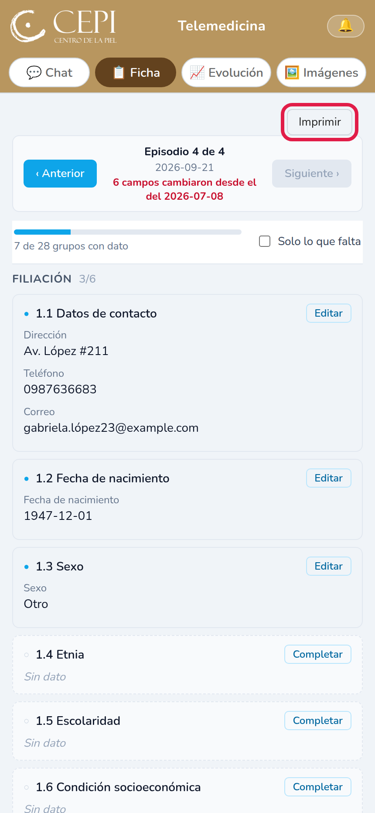
Al tocar «＋ Nueva consulta» la ficha se crea sin pedir confirmación y aparece enseguida la primera pregunta. Use «Nueva consulta» para otro motivo de consulta; para un control del mismo motivo, use «＋ Agregar evolución».
Dónde: paciente → Chat → menú ☰ → «＋ Nueva consulta».
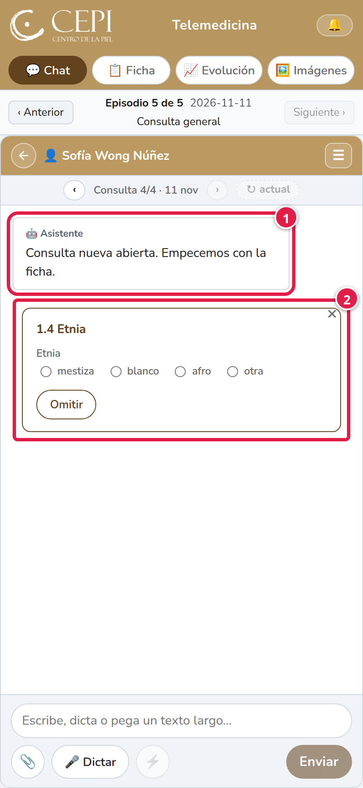
Quien abre la consulta queda como su responsable. Nadie más recibe aviso hasta que el caso se derive.
Para pedir la opinión del especialista, en «Derivar» toque «Al responsable de turno»: el caso le llega solo a quien está de guardia ese día. Si nadie está de turno, les llega a todos los especialistas del grupo.
Dónde: paciente → Chat → menú ☰ → «Derivar».
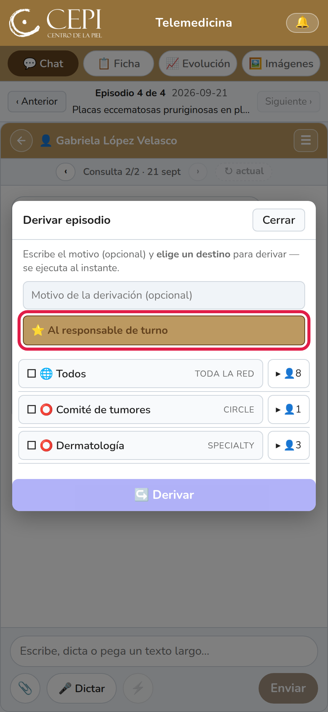
Calendario semanal, de lunes a domingo, con el especialista de guardia de cada semana. Arriba dice quién es el responsable de turno hoy. Los especialistas pueden asignar o quitar personas en cada semana.
Dónde: menú ☰ de arriba → «Turnos».
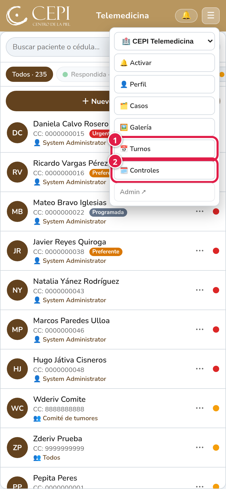
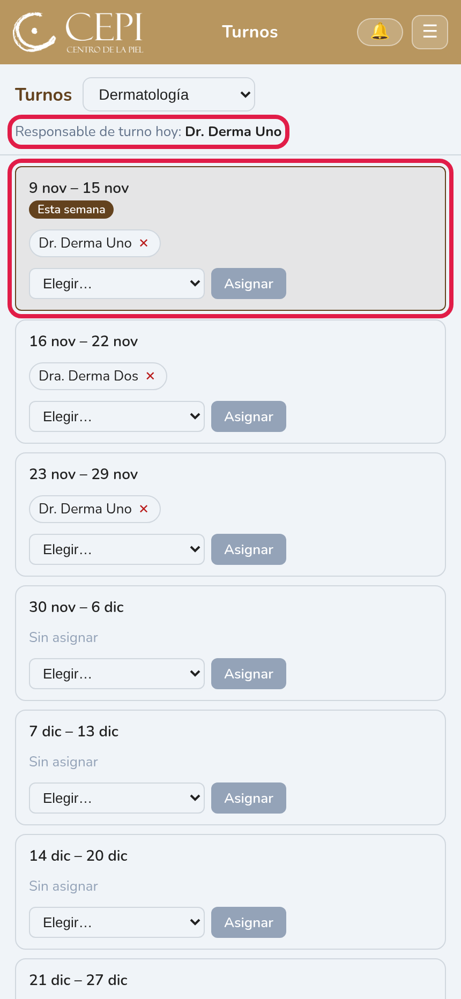
Lista de los próximos controles de todos los pacientes, agrupados por semana. Los atrasados salen arriba, en rojo. Cada uno dice el paciente, la fecha, qué hacer, el diagnóstico y el médico que lo indicó. Sirve para que no se pierda ningún seguimiento con el cambio de internos.
Puede buscar por nombre o cédula. Al tocar un control se abre el paciente.
Dónde: menú ☰ de arriba → «Controles».
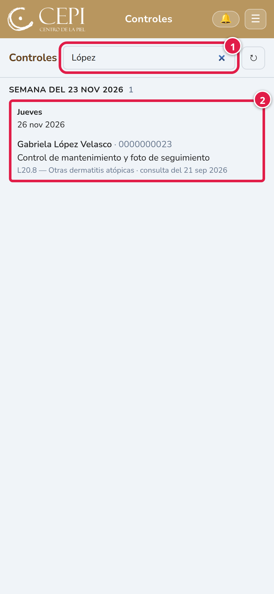
El especialista responde la interconsulta desde un formulario: respuesta, diagnóstico, tratamiento, observaciones y prioridad clínica (Urgente, Preferente o Programada). La respuesta queda guardada en la ficha y en la evolución, y el paciente deja de figurar como pendiente de revisar. La prioridad reemplaza a la pregunta BLINK.
La prioridad se ve como una etiqueta de color en la lista de pacientes. Marcar «Urgente» no envía avisos por sí solo: para avisar al supervisor hay que derivarle el caso.
Dónde: paciente → Chat → menú ☰ → «Responder interconsulta».
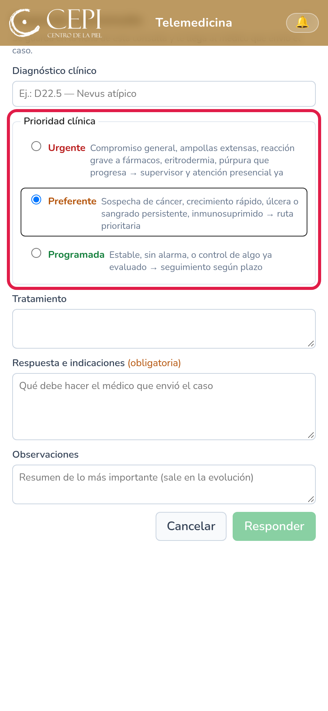
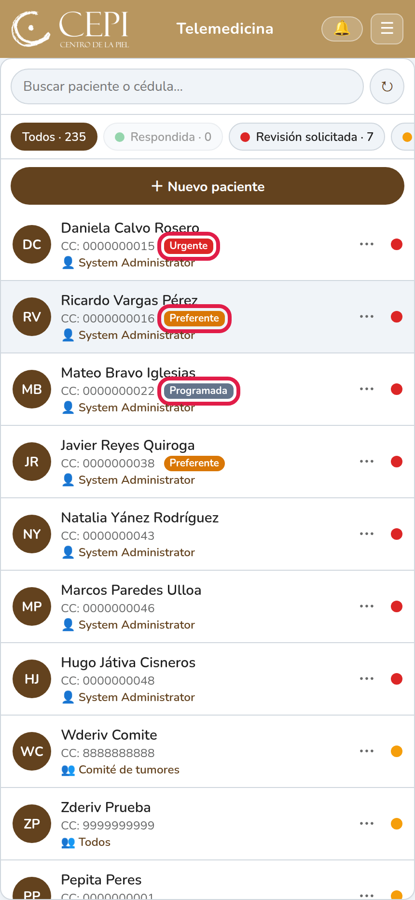
«Dar de alta» cierra el caso, con una nota opcional. Desde el día siguiente el paciente ya no aparece en la lista; se lo encuentra buscándolo o con el filtro «Alta». Si vuelve, se abre una consulta nueva con su propio motivo.
Dónde: paciente → Chat → menú ☰ → «Dar de alta».
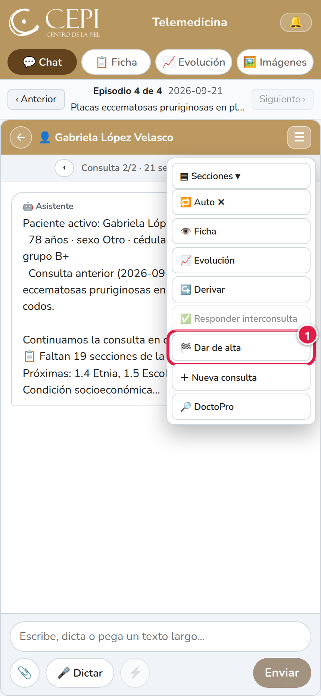
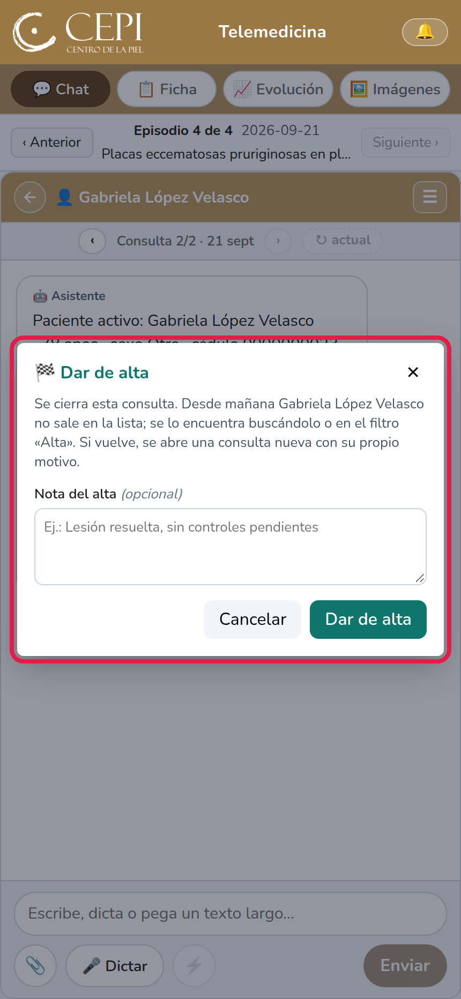
Dos recuadros propios, separados de las fotos clínicas: el consentimiento informado, que firma el paciente, y el de privacidad de los datos, que firma el profesional. En cada uno se sube la foto de la hoja firmada con «Subir foto». Valen para todas las consultas del paciente.
Dónde: paciente → pestaña Imágenes, arriba.
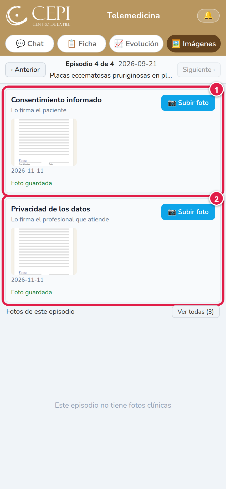
Al registrar un paciente, el celular es obligatorio y el email es opcional.
Cuando usted fija o cambia el próximo control para hoy o una fecha futura, el paciente recibe un aviso de su cita por WhatsApp y por email (si tiene email registrado).
Dónde: lista de pacientes → «＋ Nuevo paciente».
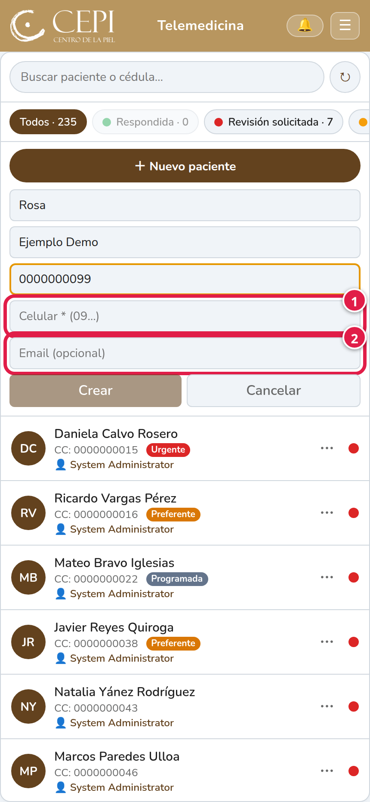
Una cuenta que todavía no está aprobada solo ve la pantalla de espera, sin acceso a pacientes ni a fotos. Si la persona ya tiene acceso en otra organización de CEPI, aparece un botón para entrar a esa organización.
Dónde: al iniciar sesión con una cuenta sin aprobar.
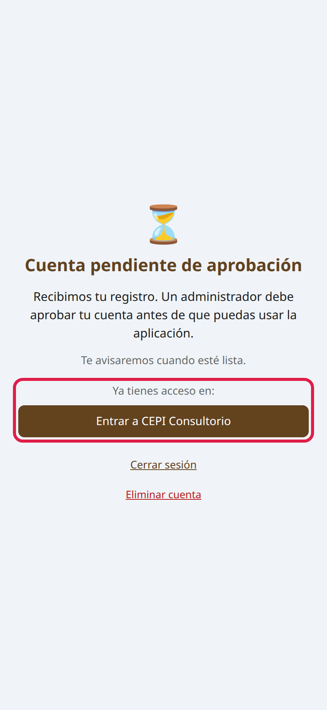
El ícono de la app ya no lleva la palabra «Dermatosito». Se actualiza en el teléfono al instalar la versión nueva de la app.
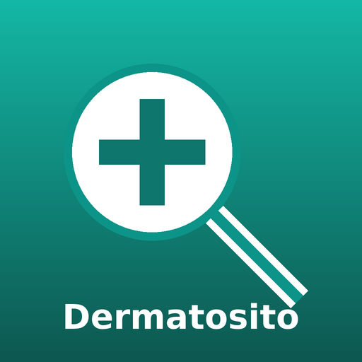